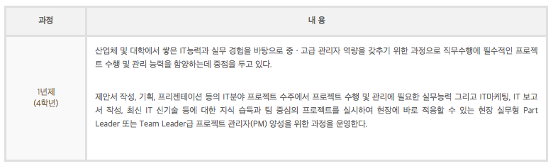
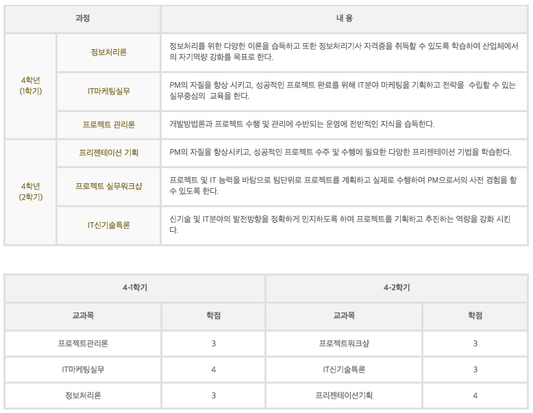
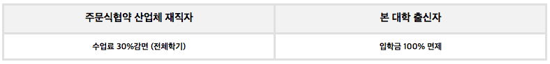

전문대학교 이상을 졸업한 졸업자의 계속 교육 활성화를 위해 산업체 재직 경력에 관계 없이 학사학위 전공심화과정을 이수하면 학사학위를 수여하는 제도입니다.
교육목표 : 프로젝트관리자(PM) 양성
수업년한 : 1년제 4학년 과정
학위 : 공학사
수업시간 : 야간(19:25분부터 ~ ) 또는 주말 활용

지역 IT기업 종사자의 직무능력 향상을 위해 지역기업에서 요구도가 가장 높은 프로젝트 관리자를 위한 현장실무 중심의 교육과정 편성
현장경험이 풍부한 교수진과 현업에 근무하고 있는 전문가를 초빙하여 현장실무 중심의 심화 교육 실시
팀 단위로 현장과 연계된 프로젝트를 수행하는 소수 정예 실무교육 실시
교육수요자의 의견을 수렴하여 향후의 교육과정에 반영할 수 있도록 구성
전문학사 학위 교과목과의 연계를 최대화 할 수 있도록 교육과정 체계 확립
학사학위 전공심화과정 운영을 위한 전담 조직을 운영하고 전담인력을 배치하여 고품질의 전공심화 학사운영체제 구축
현장 적합성이 높은 교육과정에 검증된 글로벌 역량, 최첨단 선진 교육환경, 맞춤형 주문식 교육과정 운영 및 국제공인자격과정운영 경험 등의 핵심 역량을 집중하여 학과 운영
업체 경험이 풍부한 전임교수, 겸임교수 및 산업체실무담당자와 함께 전체 교과목에 대해 현장성 있는 실무교육을 실시하여 교육수요자 만족도 극대화
기업 연계 인력네트워크를 구축하고 교육수요자(기업체, 전문대학 졸업자)의 기술경쟁력 증대 및 소프트웨어 품질 향상
현업활용성이 높은 맞춤형 주문식교재를 활용하여 학습자중심의 개인/팀 프로젝트식 교육 운영
업무지장 최소화와 자기계발 병행을 위해 야간과 토요일(조정가능)을 활용한 과정 운영으로 수강 수월성 제공

취업분야(미재직자 대상)
기업체 프로젝트 개발자 및 관리자, IT 관련기업, S/W개발 업체, 병원, 금융기관, 모바일업체, 게임개발업체, 일반기업의 IT 업무관리 및 개발 분야
외국어 능통자인 경우 해외 취업 주문식교육협약반 프로그램 연계 지원
특히 전문학사과정의 일본 취업반과 연계하여 체계적인 일본 취업 지원
취득 자격증
PMP, 정보처리기사, SCJP, OCP, 전자상거래관리사, 인터넷시스템관리사, 웹프로그래머
대학원
경북대학교, 경희대학교, 숭실대학교, 영남대학교, 카돌릭대학교, 계명대학교 등 많은 대학의 대학원에 진학을 하였으며 입학 이후부터 체계적인 대학원 안내 및 진학 지도 실시
모집학과 / 모집인원
지원자격
전문대학 또는 이와 동등 이상의 학위과정을 졸업한 자
지원학과와 졸업학과가 동일계열에 해당하는 자
전형방법 및 전형료
원서접수 : 인터넷/방문 접수(전형료 20,000원)
전형방법 : 대학성적 + 면접
전형일정
일정이 확정되면 공시(12. 1 ~ 1. 15 예정)
특전

장학혜택
입학성적 우수 장학금, 학업성적우수장학금
면접장학금 외 14가지의 학교 및 산업체 장학금
제출서류
입학원서, 졸업(예정)증명서 또는 수료(예정)증명서, 성적증명서
입학상담
컴퓨터정보공학과 사무실 : 053-940-5290 / 5317
변진용교수 : 053-940-5296 / 010-2929-0950
김호용교수 : 053-940-5298